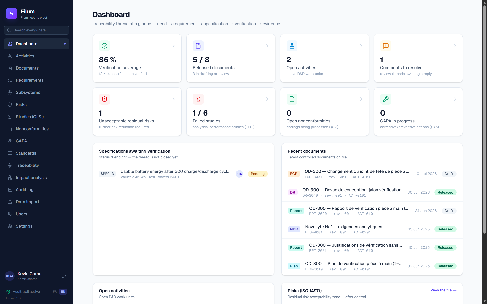
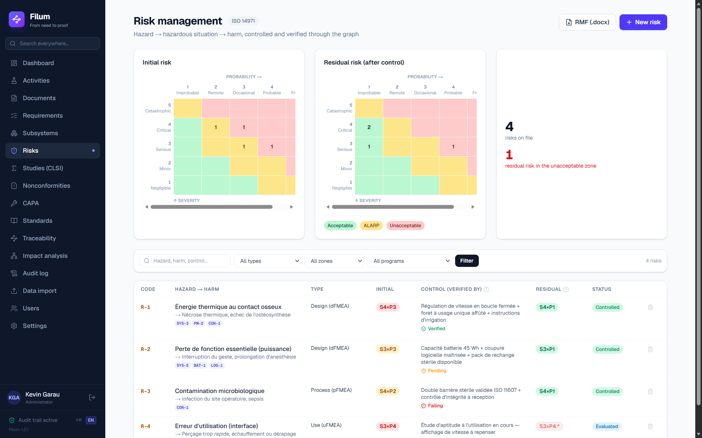
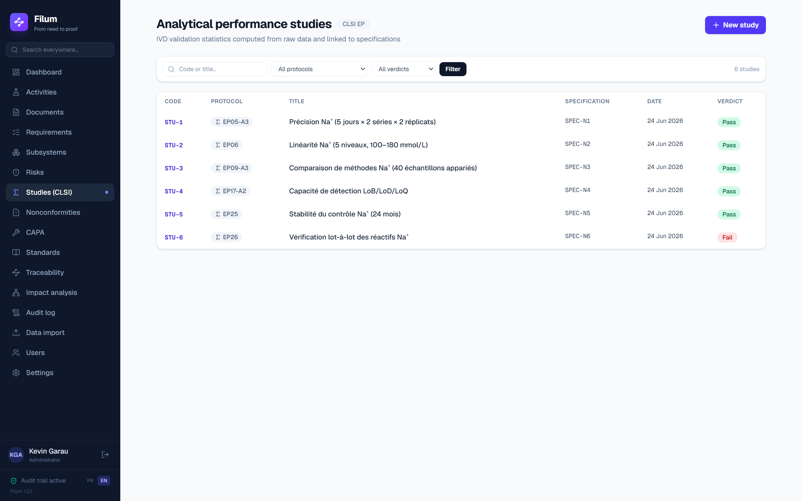
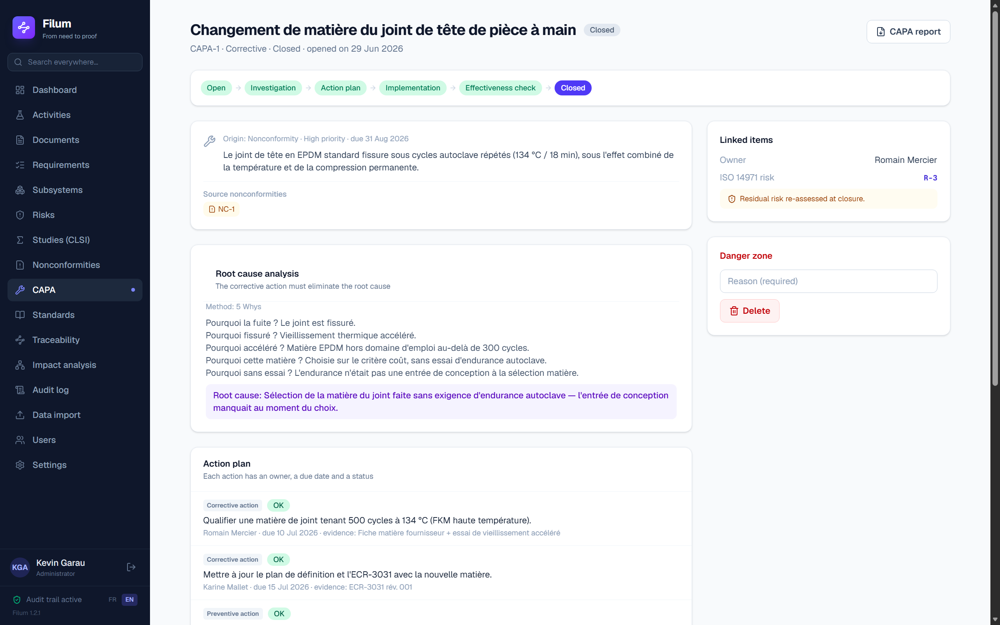

Traceability & compliance — medical device R&D
Filum connects user needs, requirements, tests, risks and evidence into a living traceability graph — and generates design reports, DHF, risk management file and CAPA reports on demand. ISO 14971 risk, CLSI method validation and NC/CAPA live on the same thread: you enter the link once; gaps are flagged automatically.

The root cause
The key idea
Click each link of the thread to see what Filum does with it.
The foundation
Every screenshot comes from the running application — nothing is mocked up. Two demonstration programmes: OD-300 “Orthodrive” (surgical drill) and NovaLyte NL-100 (electrolyte analyser, in vitro diagnostics), which the analytical validation screens come from.
Click the image to enlarge
The modules
Risk, method validation and CAPA are not add-ons: they live on the same thread as your requirements — and verify one another.

FMEA register (hazard → hazardous situation → harm), 5×5 matrix with Acceptable / ALARP / Unacceptable zones, initial risk against residual. And above all: a control counts as “verified” only when the specifications and tests carrying it are closed favourably — evidence from the graph, not a ticked box.
On OD-300: R-1 “thermal energy” controlled and verified; R-4 “use error” still open — flagged as such.

Import the bench CSV: the built-in statistical engine runs the CLSI protocols — EP05 precision (ANOVA), EP06 linearity, EP09 method comparison (Bland-Altman, Passing-Bablok), EP17 LoB/LoD/LoQ, EP25 stability, EP26 lot-to-lot — and returns a Pass / Fail verdict against an a priori criterion. The study verifies a specification: the evidence lands in the matrix.
On NovaLyte: 6 specifications, 6 studies STU-1 to STU-6 — 5 pass, 1 lot-to-lot failure (EP26) visible immediately.

A failed test, a NOK specification, an unacceptable risk: the nonconformity is born from the graph, with its signed disposition. Escalation to CAPA is justified on risk, and the lifecycle is locked — no action plan without a root cause, no closure without an effectiveness check proven by a re-run test that passes, controlled by an independent verifier.
On OD-300: the failed VER-3 test raised NC-1, escalated to CAPA-1 (root cause: unsuitable seal elastomer) — closed EFFECTIVE, SPEC-5 turned NOK → OK automatically.
AI assistant
Every text carries an “Origin: AI” badge naming the model used. Nothing anonymous.
The AI writes only from the graph and cites every claim: [REQ-3001], [SPEC-5]…
A draft enters a document only after explicit, named and timestamped validation.
The AI reports the state of the data. The decision — and the signature — stay human.
Compliance of the software itself
A compliance tool that asks to be taken at its word is worth nothing. Every mechanism below can be checked by a third party — often without even opening Filum.
Every entry carries the fingerprint of the previous one. Modifying or deleting a row directly in the database breaks the link for all the following ones, and verification says at which rank. Chaining detects, it does not prevent — that is written as such on the screen.
A compressed folder: the approved records byte for byte, their fingerprints, and a single anchor covering them all. Your auditor checks it with sha256sum, on any machine, ten years from now — without the software, without us, without a licence.
The archive anchor is counter-signed by the RFC 3161 timestamping authority you designate. A chain recomputed after the fact will not give back the timestamped head: tampering goes from detectable to undeniable.
Filum never deletes a frozen record and applies no purge at expiry. You declare your period, what grounds it and your procedure reference. A legal hold blocks every deletion, with a mandatory written reason.
An administrator issues a single-use token; its holder chooses their own secret. Whoever types another person's password holds both components of their signature — exactly what 21 CFR 11.200(a)(3) sets out to prevent.
The password is asked again at every signature, and only the designated signer can apply theirs. Administrator, approver, editor, viewer: the guard is at the server, not in a greyed-out button.
The §11.100(c) certification binds the legal entity whose staff sign, by handwritten letter to the FDA. No software vendor can carry it for you, and one that claims to is selling you a risk.
What we do deliver: a clause-by-clause matrix in three columns — what the software does, what remains yours, what is out of scope, open points named included; a data integrity note with a protocol your auditor can run to falsify it; and a validation pack: IQ protocol, validation file, requirements and test cases executable in your own environment.
We executed this protocol on our own software. It found 7 defects, all closed. Read the case study → · And what stops the next one getting through: continuous validation →
Scope
A demonstration given to somebody looking for something else costs two hours on both sides. So we say it here. No line in the right-hand column comes with a delivery date: we do not sell what does not exist.
Filum will probably not suit you if you are looking for a complete quality system (training, suppliers, complaints, audits) · your device is primarily software and you expect a tooled IEC 62304 chain · you need a PLM, ERP or ALM integration · you want a vendor-run multi-tenant SaaS · you expect a supplier to declare itself “21 CFR Part 11 compliant”.
The scope note expands every line, states the three design trade-offs behind the absences, and says what remains your organisation's responsibility. It is meant to be read before committing, not after. No form, no email address to leave:
Positioning
| Hardware V&V driven by test data | Fine-grained requirement → evidence graph | Risk & CAPA verified by the graph | Auto-compiled file (DHF) | Simplicity & SME pricing | |
|---|---|---|---|---|---|
| General-purpose eQMS (Greenlight Guru, Qualio…) | — | — | partial | partial | — |
| ALM / requirements (Polarion, Jama…) | — | ✓ | — | — | — |
| Regulated-software platforms (Ketryx…) | — | ✓ (code) | partial | partial | — |
| Filum | ✓ | ✓ | ✓ | ✓ | ✓ |
Mechanics and embedded software (IEC 62304) live on the same graph — no silos.
Frequently asked
Today, with you: Filum installs locally or on your own server — the database is a single file you back up as you see fit. A hosted SaaS offer (EU) is coming with V1; free data export will remain the rule.
Filum never hosts it: the library holds metadata only (code, title, usage description, official link). You read the text in the copies your company purchased — the standards bodies' copyright is respected by construction.
The validation pack exists and is handed to you: an IQ protocol for your IT team or hosting provider, a validation file listing the software requirements with justified criticality, and an executable operational qualification suite — its cases call the same functions as the application, not copies, which is the only way a report says anything about the software actually delivered. You replay it on your side, after every version upgrade.
What remains yours, and what we cannot do for you: the system criticality decision, performance qualification under your real conditions, and your revalidation policy.
You produce an inspection archive: a compressed folder holding the approved records byte for byte, the list of their SHA-256 fingerprints, the audit trail, and a single anchor covering everything. The inspector verifies it with the standard tools of their operating system — without Filum, without a licence, without us. That anchor can be counter-signed by the RFC 3161 timestamping authority of your choice: a value recomputed after the fact will never give back the one that was timestamped.
The honest corollary: chaining detects tampering, it does not prevent it. Anyone with direct access to the database file can write outside the application — third-party timestamping, and the access restriction that belongs to your infrastructure, are what close that door.
No. It writes only from your graph's data, cites its sources, writes “to be completed” when information is missing — and nothing enters a document without your named validation. No regulatory decision is automated.
No — quite the opposite. Filum generates .docx files structured like your templates (title block, approvals, revision history, Design Input/Output…). You keep delivering Word; you just stop re-typing it.
The intended model: self-service, transparent pricing, no multi-year commitment — the opposite of traditional eQMS. Get in touch about the pilot programme: the first partners get founding terms.
Pilot programme open — surgical instruments, implants and in vitro diagnostic devices.